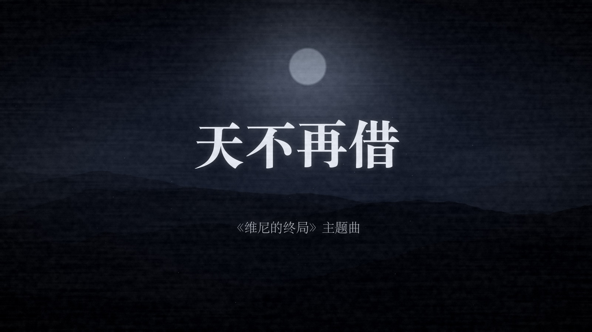
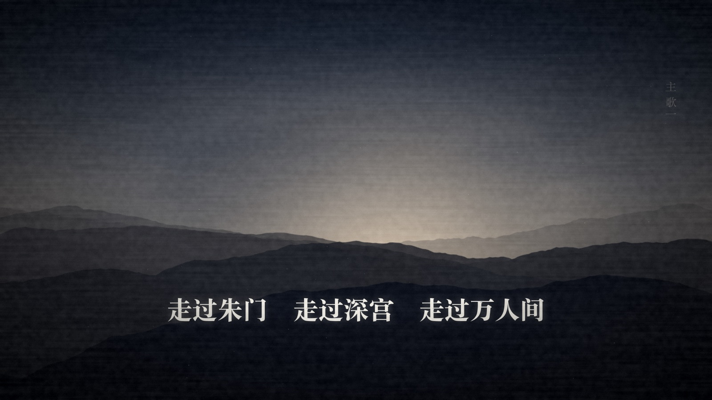
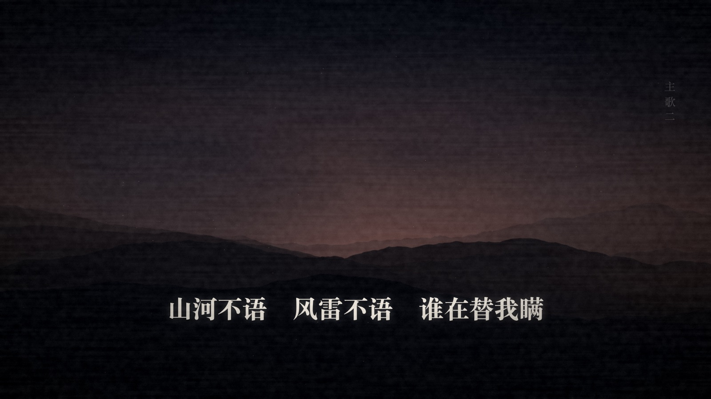
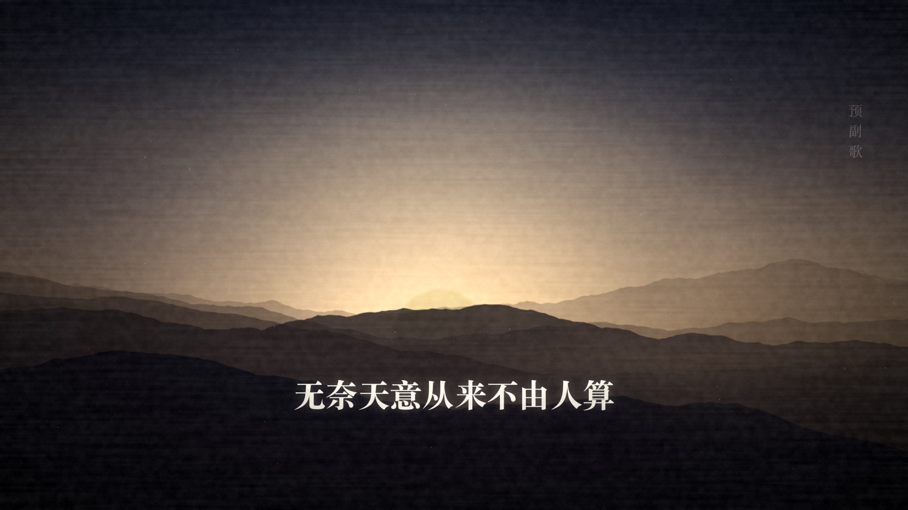
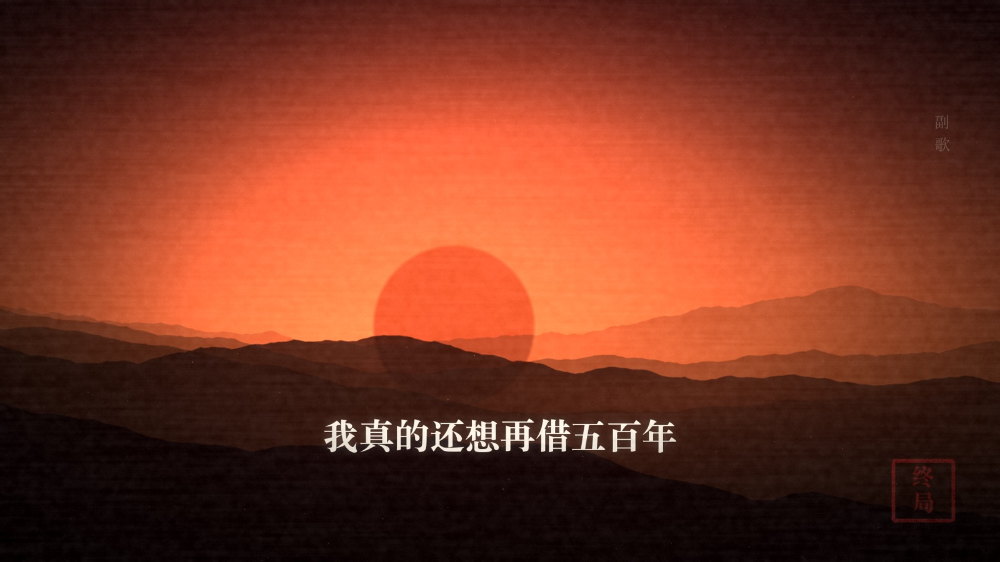
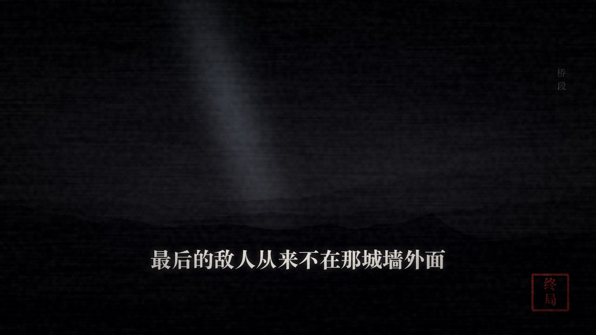

致敬韩磊《向天再借五百年》。
原曲问天「我真的还想再活五百年」——
这首歌是它的回声与反面：天不肯借了，借期已满。
三版同词同曲、不同随机种子。落差 = 主歌与末段副歌的响度差，数字越大，
「主歌低沉克制、副歌爆发」的对比越强。重点听 1:20 与 2:38 之后的副歌。
踏着高墙 一重一重 冰冷的雕栏
走过朱门 走过深宫 走过万人间
以为把名字写进了日月和山川
天光就该只照我这边
数着更鼓 一声一声 敲碎的夜寒
山河不语 风雷不语 谁在替我瞒
史册翻页从来不问功过与恩怨
只把王侯写成一缕烟
有心锁住万里江山
无奈天意从来不由人算
大厦将倾 风未起 满城灯火先寒
我真的还想再借五百年
天不再借 不再借 借条烧成了烟
九重宫阙 一夜换了天
谁在殿外磨亮了近身的那把刀剑
谁把忠诚兑成活着 兑成一句谎言
最后的敌人从来不在那城墙外面
他就站在我的影子里边
求过神明 拜过青天
换不来龙椅底下 多半年
天不再借 借期已满
大江东去 涛声依旧在人间
全曲统一「言前辙」（-an / -ian / -uan），与原曲的「年 / 限 / 变 / 点」同辙。
| 调式 | g 小调（羽调式着色），副歌第二遍升全音到 a 小调 |
| 速度 | 74 BPM，4/4 拍 |
| 音域 | 主歌 G2–D4 胸腔实声；副歌冲到 G4–A4，「天不再借」是全曲最高点，真声硬顶，不翻假声 |
| 音色 | 男中音，靠后的胸腔共鸣 + 蒙古长调式拖腔颤音 |
| 时长 | 3′50″ |





